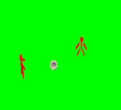
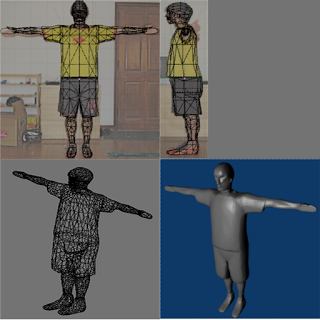
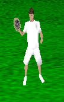

Championship Ultimate
In the fall of 2009, I posted a picture of a yellow triangle and a red square to my BlogSpot blog. It was really just a few days of work (a tutorial guided me through the basics of using OpenGL to draw on an iPhone), but to me it also the marked the beginning of an adventure. I had recently graduated college and I wanted to smash together my two major interests at the time: programming and Ultimate Frisbee. So, after saving up a little money, I quit my job and started building an Ultimate Frisbee video game.
Without realizing it, I became what’s now called an “indie game-developer”, but at the time, the indie scene had yet to mature. For context, Indie Game: The Movie came out in 2012, and Braid, one of the central subjects of that documentary, had only just been released in 2008. The Boston Indie community that I eventually learned so much from had only just started holding meetings in early 2009, but I was in Ohio anyway and had no idea it existed. So without any real role model, passion was my guide. I liked Ultimate; I wanted to play it as a video game; so I started building it.
Current best-practice for an indie game developer goes something like this:
- Choose your subject matter carefully. The wackier the better. The more attention grabbing the better. The field is crowded, so you have to stand out.
- Boil your game down to its essence. If you can’t pitch it in 2 or 3 sentences, your chances of breaking out are slim.
- Use a pre-built game engine like Unity3D. You have a limited team and a limited budget. Any time spent building an engine would be better spent working on the gameplay, the art, the sound, and the marketing.
I unwittingly nailed #2. Mine would be essentially the only Ultimate game out there, so the pitch was simple: you want to play Ultimate on your phone? This is it!
#1 was a bit tougher for me (in retrospect). It was easy to stand out, but did anyone know what Ultimate was? How many people actually wanted to play it as a video game? I didn’t really know the answers, but I also didn’t really care. I wanted to play it, so that’s all that mattered.
For #3, I made the classic mistake that so many budding indie developers make: I decided to build the engine myself.
The reason why this mistake is so common is that building a video game is building a world. If you’re the sort of person that wants to build a world, you likely also want full control over that world. If you take a game engine off the shelf, you’re losing some amount of control. But that extra control usually isn’t worth the extra time investment required, at least from a business perspective.
The engine of a game is a bit like a painter’s palette. Two games made with the same engine may end up feeling a bit similar. They’ll use the same graphical features. The controls may have the same feel. The levels may even be similar if the engine has a particular strength (say—it supports intricate architecture, or can handle hundreds of enemies on the screen at the same time).
But tons of successful games operate beautifully within the confines of their chosen engines—why should my game be any different?
I made this mistake on purpose. I wanted to learn how to build games. I didn’t want my hand held through the process. I wanted to learn why things were done the way they were. I didn’t want to use anyone else’s palette. I wanted my games to have a unique feel.
Development progressed rapidly. Triangles gave way to stick figures, which gave way to proper 3D models traced from pictures of myself.   My girlfriend videotaped me running, jumping and throwing discs, and I animated the models by posing them over the videos frame by frame. I enlisted two college friends to ‘announce’ the game: they recorded stock phrases that the game would play after key events like turnovers and goals. My brother wrote a song to play while traversing the menus. The sound effects—admittedly terrible—were just me grunting and clapping into my computer’s microphone.
It was difficult to get the frisbee to fly realistically. I tried and largely failed to implement the equations I found in a physics dissertation, but the mess of numbers I ended up with passed the eye test.  The AI-controlled players also needed to behave convincingly, but it was tough to nail the details. When and where should they cut and throw? How should they respond if the player parks a defender right in front of the thrower (a poach in Ultimate parlance)? The resulting AI was fairly predictable, but offered enough of a challenge.
After 10 months of development I submitted the game to Apple for review, and after a grueling week of waiting, on June 29th of 2010, Championship Ultimate appeared in the App Store.
It was a total critical success.
Just kidding. There were no critics. Well, there were critics but they didn’t know that I or my game existed. And for the most part I didn’t know that they existed. Needless to say, I had no natural marketing prowess.